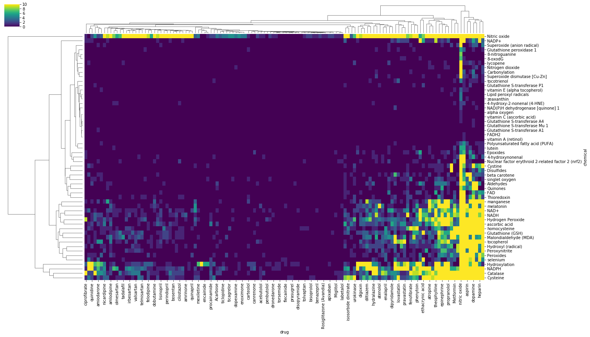

ElasticSearch
Searching Elastic Search for Articles that reference Drugs and Chemicals related to oxidative stress
 - Searched pubmed data for co-occurrence of a drug and chemical name in the abstract of a paper - Created list of documents each drug/chemical occurs in for later use
Udemy Course Notes
Section 2: Architecture of Elastic Search
- 5 shards per node default
- Collection of nodes called a cluster
- Rename cluster since nodes default to entering a cluster named elasticsearch default
- Default 1 replica per shard
- Primary shard written to first, then replicas updated
- Reading occurs on any shard in a replicate group
- Coordinating Node is the first node a client pings with a search query
- May not be node with shard containing results
- May not always be the same node
- Returns result query after pinging all shards in cluster
- Can specify how routing occurs
- Custom routing i.e sending documents to a node/shards based on country of origin
- The number of shards cannot change after creating an index
- Elastic cloud is 14day free trial for starting with elastic search and Kibana for ease of use
Section 3: Installing ES and Kibana
Running default elastic search cluster:
~/Tools/elasticsearch-7.3.2/bin/elasticsearch
To ping cluster:
curl http://localhost:9200
- Change config file cluster name (config/elasticsearch.yml)
Running Kibana in default:
~/Tools/kibana-7.3.2-darwin-x86_64/bin/kibana
* Requires live elastic search cluster